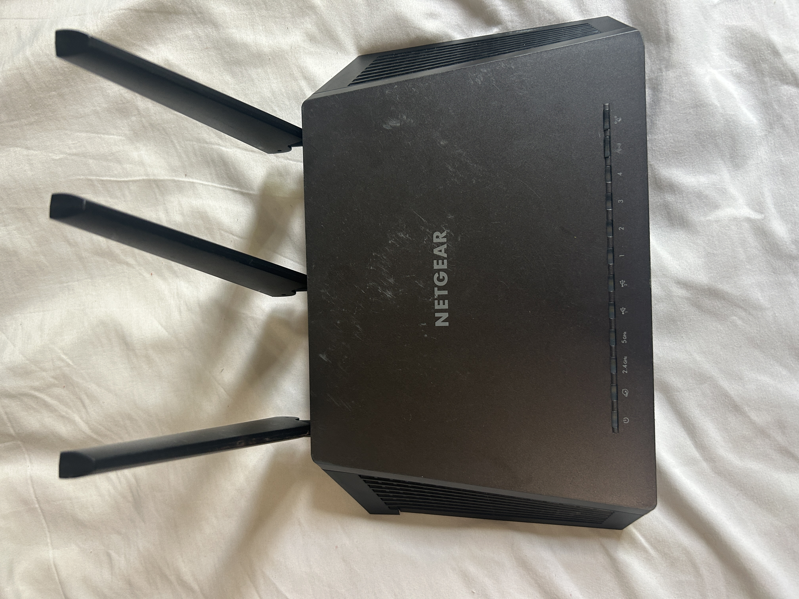
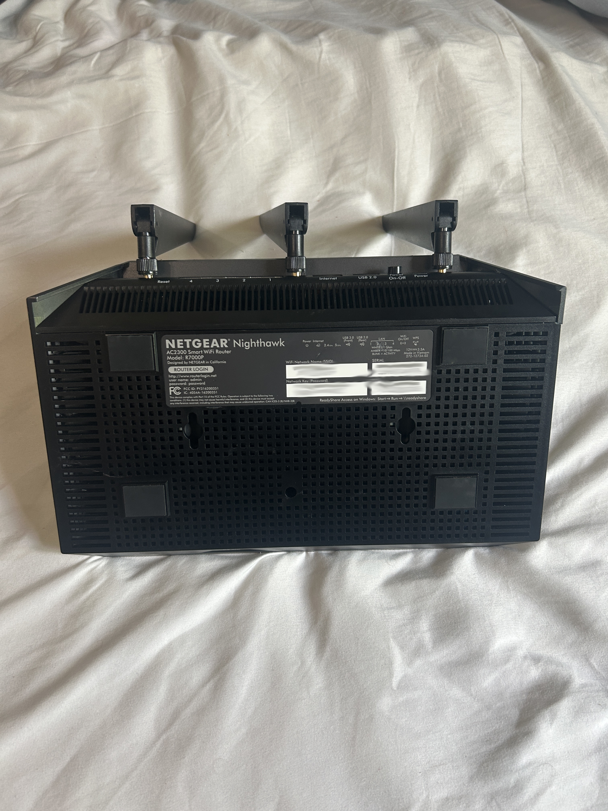

Overview
With all the news about firmware vulnerabilities in routers and the recent rule which bans foreign-made routers (i.e. all currently produced routers), I decided to give a shot at implementing an open-source alternative.
I'm a bit of a hoarder when it comes to old tech, so I've had this NETGEAR R7000 router collecting dust in my closet for some months now.

Figure 1: NETGEAR R7000 Router Front

Figure 2: NETGEAR R7000 Router Back (Redacted out of principle)
I decided this would be the perfect candidate for this project.
Description
As stated before, this project is currently a work in progress. I'm going to divide it into multiple sub-sections as I'll be trying various different things.
Sub-Projects
[Installation]
[Back to Home]
|